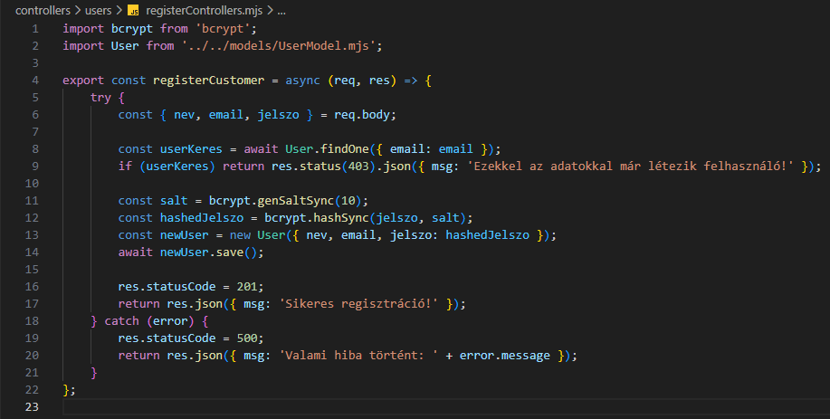

Regisztráció kezelése - registerControllers.mjs
Regisztráció kezelése - registerControllers.mjs

Ebben a részben szerkesztjük a controllers/users mappában a registerControllers.mjs állományt, amelyben kidolgozzuk a CRUD Creat művelethez tartozó logikát. Ez megfelel a http POST metódus-hoz tartozó logikának.
-
Szerkesszük a
registerControllers.mjsállományunkat.-
import bcrypt from 'bcrypt';- adotenvnpmcsomag beimportálása. -
import User from '../models/UserModel.mjs';- aUsermodell alapértelmezett beimportálása. -
export const registerCustomer = (req, res) => {...};- hozzuk létre és vigyük ki nevesítve ahttp POST metódus-hoz tartozó logikát (CreataCRUDműveletekből). -
try {... res.statusCode = 201; return res.json({ msg: 'Sikeres regisztráció!' });}- a sikeres ág a 201-eshttp hibakód-dal. -
const {...} = req.body;- areq.bodydekonstrukciója. -
const userKeres = await User.findOne({ email: email });- nézzük meg, hogy az adott e-mail címmel van a felhasználó. -
if (userKeres) return res.status(403).json({ msg: 'Ezekkel az adatokkal már létezik felhasználó!' });- ha már van, akkor ezt jelezzük a 403-ashttp hibakód-dal. -
const salt = bcrypt.genSaltSync(10);- hozzuk létre a tikosítás "kulcsát". -
const hashedJelszo = bcrypt.hashSync(jelszo, salt);- titkosítsuk a jelszót. -
const newUser = new User({...});- hozzunk létre egy újUserpéldányt areq.body-ból kapott értékekből.
Figyeljünk ajelszo: hashedJelszoértékre! -
await newUser.save();- mentsük el az adatbázisba. -
catch (error) { res.statusCode = 500; return res.json({ msg: 'Valami hiba történt!' + error.message });}- a sikertelen ág a 500-ashttp hibakód-dal.
-